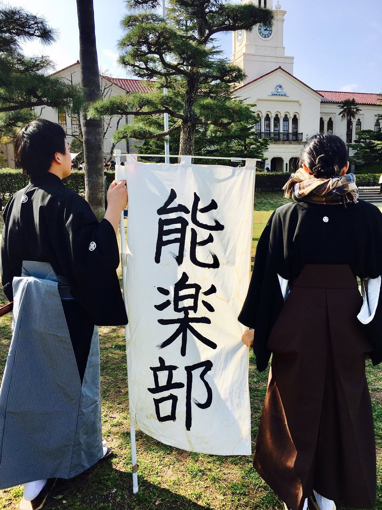

/能楽部
主に仕舞(能で一番盛り上がる部分、つまり見せ場)の稽古、謡(舞をする最中にBGM的要素を果たす歌)の稽古をしています。
🌸能楽部について🌸
— 関西学院大学文化総部能楽部 (@kgkgnoh) April 13, 2020
部員数 : 9名 (男女比率 5:4 )
雰囲気 : アットホームな感じです🍀
ウェイ系は居ない部活です！
文学部･ 経済学部 ･ 法学部 ･国際学部 ･ 商学部
〜様々な学部の部員がいます！〜#春から関学
/活動日
毎週水曜日と木曜日の放課後
/質問会など
LINEのオープンチャットにて受け付けております！ページ下のリンクよりご入会ください。
/所属人数
9人